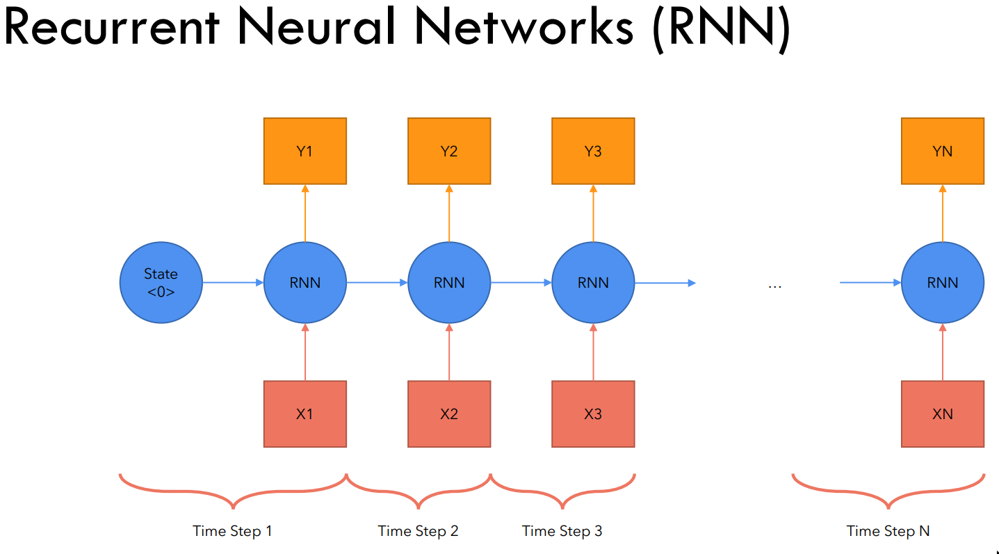
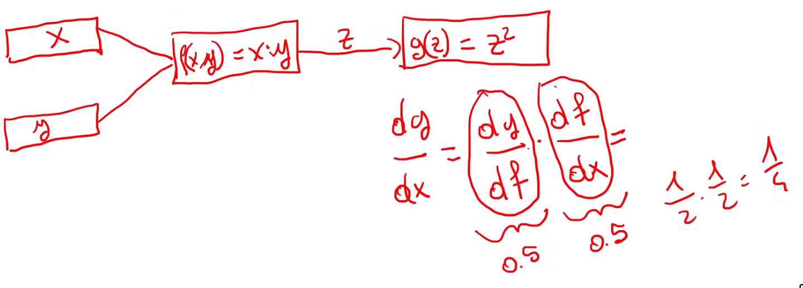

Videos:
- https://www.youtube.com/watch?v=bCz4OMemCcA&t=12s&ab_channel=UmarJamil
- https://www.youtube.com/watch?v=ISNdQcPhsts&t=1885s&ab_channel=UmarJamil
How does an Recurrent Neural Network (RNN) work at a high level?
- At each time step t:
- Inputs: xt and the hidden state ht−1 from the previous time step
- Outputs: yt and the new hidden state ht
- If we have N tokens, we need to run the RNN for N time steps
- N sequence input
- N sequence output

What are the problems with RNNs?
- Slow computation for long sequences
- Cannot be parallelized due to sequential nature
- Difficulty in accessing information from earlier time steps
- Information from earlier time steps is diluted as it is passed through the chain of RNN cells
- Vanishing or exploding gradients
- Gradients tend to vanish or explode as they are backpropagated through time
Vanishing gradients
- The longer the chain, the more the gradients either vanish or explode
- If chain of gradients is ∈(−1,1)⟹ vanishing gradients
- If chain of gradients is ∈(−∞,−1)∪(1,∞)⟹ exploding gradients

How to convert a sentence to embeddings?
- Split sentence into tokens Ti
- Ei=WE⋅Ti
- Embedding matrix WE is learned during training
In "Attention is all you need" paper, size of embedding is dmodel=512
For sinusodials, explain frequency, wavelength and explain how to increase/decrease each.
- Frequency and wavelength are inversely proportional
- f=λ1
- Frequency: number of times a sinusoidal repeats within 2π radians
- Decrease: sin(x)→sin(2x)
- Increase: sin(x)→sin(2x)
- Wavelength: distance between two repeating units of a sinusoidal
- Decrease: sin(x)→sin(2x)
- Increase: sin(x)→sin(2x)
What is position encoding and how is it calculated?
- Each word should carry positional information
- Model should treat nearby words as "close" and distant words as "distant"
- Positional encoding is calculated once and added to the embeddings
- Convert sentence to tokens Ti
- Convert tokens to embeddings using WE⋅Ti
- Add positional encoding to embeddings using Ei=WE⋅Ti+Pi
P(k,2i)=sin(100002i/dmodelk)
P(k,2i+1)=cos(100002i/dmodelk)
- k: position in the sequence
- Range: [0,N−1]
- i: dimension of the positional encoding
- Range: [0,dmodel−1]
- For each position k and each dimension i of the positional encoding, we calculate a value using sine and cosine functions
- The frequency of the sine and cosine functions increases exponentially with the dimension i
Why is the positional encoding formula defined in the paper numerically unstable and how can we fix it?
P(k,2i)=sin(100002i/dmodelk)
P(k,2i+1)=cos(100002i/dmodelk)
Direct computation of 10000−dmodel2i can result in:
- Overflow: When 10000x becomes excessively large for x>0.
- Underflow: When 10000x becomes extremely small for x<0.
Solution:
ax=(eloga)x=exloga
10000dmodel2i=edmodel2ilog10000=exp(dmodel2i⋅log10000)
=exp(2i⋅dmodellog10000)
⟹
P(k,2i)=sin(exp(2i⋅dmodellog10000)k)=sin(k⋅exp(2i⋅dmodel−log10000))
P(k,2i+1)=cos(exp(2i⋅dmodellog10000)k)=cos(k⋅exp(2i⋅dmodel−log10000))
⟹
P(k,2i)=sin(k⋅exp(2i⋅dmodel−log10000))
P(k,2i+1)=cos(k⋅exp(2i⋅dmodel−log10000))